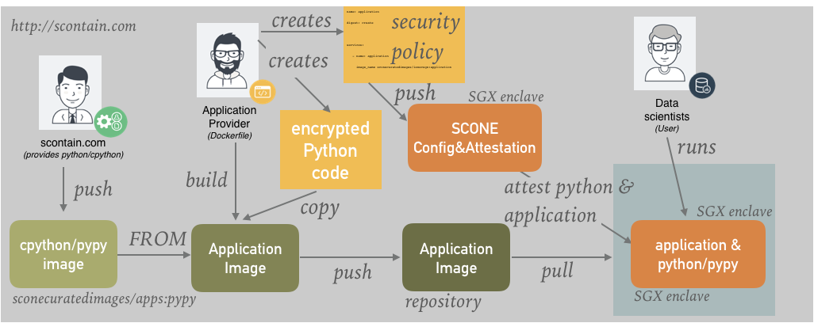

Python¶
SCONE supports running Python programs inside of SGX enclaves. We maintain Docker images for various Python versions / Python engines like:
- Python 3.5.1: sconecuratedimages/appspython-3.5-alpine
- Python 2.7: sconecuratedimages/apps:python-2.7.13-alpine3.6, and
- PyPy 2.7: sconecuratedimages/apps:pypy-2.7.15-alpine3.7
Let us know if you need a specific Python / PyPy version.
PyPy for SCONE
PyPySCONE's speed is close to PyPy ("just in time Python") and in almost all SpeedCenter benchmarks is PyPy inside an enclave faster than native Python.
Workflow¶
SCONE supports the typical Docker workflow to create Docker images that contain the Python engine as well as the Python program. SCONE supports the encryption of the Python programs to ensure both the confidentiality as well as the integrity of the programs. A typical workflow might look like this:

We at scontain.com maintain the SCONE-Python image and push this to hub.docker.com. This image can be used by authorized application developers to add encrypted Python programs and encrypted libraries. The SCONE runtime of the Python engine needs to get access to the encryption key to be able to decrypt transparently the Python scripts for the Python engine. To do so, the application developer defines a security policy that ensures that only the Python engine that executes the application of the application provider gets access to this encryption key.
When the Python engine starts completely inside of a SGX enclave. The SCONE runtime transparently attests the Python engine as well as the filesystem: Only if both the Python engine has the expected MrEnclave as well as the filesystem state is exactly as expected, the SCONE runtime gets the encryption key from the SCONE CAS (Configuration and Attestation Service). The application developer therefore adds the expected MrEnclave and the initial filesystem state in form of a security policy to SCONE CAS.
Complex Workflows¶
SCONE supports more complex workflows in which the user can also specify encrypted volumes for input as well as output data. We explain a more complex example in the context of our blender use case.
Image¶
Getting access to Python Images
You need access to a private docker hub repository sconecuratedimages/apps to be able to evaluate our Python images. Send us your docker hub ID to get access to this repository.
Currently, we provde a simple Python 2.7 image that is based on the standard Python image python:2.7-alpine.
You can pull this image as follows:
docker pull sconecuratedimages/apps:python-2-alpine3.6
Python Interpreter¶
To run the Python interpreter inside an enclave in interactive mode, first start the container:
docker run --rm -it -v "$PWD":/usr/src/myapp -w /usr/src/myapp sconecuratedimages/apps:python-2-alpine3.6 sh
The execute python inside of the container:
SCONE_HEAP=256M SCONE_VERSION=1 python
Since we set SCONE_VERSION=1, we get the following outputs1:
export SCONE_QUEUES=4 export SCONE_SLOTS=256 export SCONE_SIGPIPE=0 export SCONE_MMAP32BIT=0 export SCONE_SSPINS=100 export SCONE_SSLEEP=4000 export SCONE_KERNEL=0 export SCONE_HEAP=268435456 export SCONE_STACK=4194304 export SCONE_CONFIG=/etc/sgx-musl.conf export SCONE_ESPINS=10000 export SCONE_MODE=hw export SCONE_SGXBOUNDS=no export SCONE_VARYS=no export SCONE_ALLOW_DLOPEN=yes (unprotected) export SCONE_MPROTECT=no Revision: d0afc0f23819476cbc7d944a20e91d79fcb6f9ab (Thu Aug 16 16:45:05 2018 +0200) Branch: master (dirty) Configure options: --enable-shared --enable-debug --prefix=/mnt/ssd/franz/subtree-scone/built/cross-compiler/x86_64-linux-musl Enclave hash: f129bbd19627367c03e2980c0f04a32809a7aae1d795a75220d9054daf537b30 Python 2.7.13 (default, Jun 1 2018, 13:20:58) [GCC 7.3.0] on linux2 Type "help", "copyright", "credits" or "license" for more information. >>>
Potential error messages:
Could not create enclave: Error opening SGX device
Your machine / container does not support SGX. Set mode to automatic via SCONE_MODE=AUTO: in AUTO mode, SCONE will use SGX enclaves when available and emulation mode otherwise.
Killed
Your machine / container has most likely too little memory: the Linux OOM (Out Of Memory) killer, terminated your program. Try to reduce memory size by reducing environment variable SCONE_HEAP appropriately.
The meaning of protected versus unprotected library is explained in the faq.
Running an application¶
Say, you have a Python application called myapp.py in your current directory. To execute this with Pyhton 2.7 inside an enclave, you need to set some environment variables.
-
To run Python inside of an enclave, you can set the environment variable SCONE_MODE=HW and SCONE_ALPINE=1.
-
To issue some debug messages that show that we are running inside an enclave, set SCONE_VERSION=1
-
In general, we only permit the loading of dynamic libraries during the startup of a program - these libraries are part of MRENCLAVE, i.e., the hash of the enclave. To enable the loading of dynamic libraries after startup (and without requiring the authentication of this library via the file shield), one can set SCONE_ALLOW_DLOPEN=2. For operations, the environment variables are set by the CAS and you must set SCONE_ALLOW_DLOPEN either to SCONE_ALLOW_DLOPEN=1 to enable loading of dynamic libraries or must not define SCONE_ALLOW_DLOPEN.
-
Python applications often require large heaps and large stacks. The current SGX CPUs (SGXv1) do not permit to increase the size of enclaves dynamically. This implies that enclaves might run out of memory if the initial enclave size was set to small. Selecting large enclave size by default would result in long startup times for all programs. SCONE permits to set the heap size via environment variable SCONE_HEAP and the stack size via STACK_SIZE at startup.
Python program exits
Python does not always deal gracefully with out of memory situations: often, it terminates with some misleading error message if Python runs out of heap or stack memory. Please try to give python sufficient stack and heap size if this happens. We recommend to start with a large heap, like, SCONE_HEAP=256M to ensure that Python has sufficient heap. If your program runs without any problem with a large heap, you can try to reduce the heap size to speedup program startup times.**
Note that you can set the environment variable of a process - in our case python - running inside a container with docker option -e:
docker run --rm -v "$PWD":/usr/src/myapp -w /usr/src/myapp -e SCONE_HEAP=256M SCONE_MODE=HW -e SCONE_ALLOW_DLOPEN=2 -e SCONE_ALPINE=1 -e SCONE_VERSION=1 sconecuratedimages/apps:python-2-alpine3.6 python myapp.py
Will produce an output like
export SCONE_QUEUES=4 export SCONE_SLOTS=256 export SCONE_SIGPIPE=0 export SCONE_MMAP32BIT=0 ...
NumPy¶
Let's see how we can install some extra packages that your python program might need. Let us focus on NumPy first, a very popular package for scientific computing. Note that the following steps you would typically perform as part of a Dockerfile.
First, we start the SCONE Python image:
docker run -it --rm sconecuratedimages/apps:python-2-alpine3.6 sh
This is a minimal image and you need to add some packages to be able to install packages that compile external code:
apk add --no-cache bats libbsd openssl musl-dev build-base
We then install numpy inside of the container with the help of pip:
pip install numpy==1.14.5
This results in an output like
Collecting numpy==1.14.5 Downloading https://files.pythonhosted.org/packages/d5/6e/f00492653d0fdf6497a181a1c1d46bbea5a2383e7faf4c8ca6d6f3d2581d/numpy-1.14.5.zip (4.9MB) 100% |████████████████████████████████| 4.9MB 375kB/s Installing collected packages: numpy Running setup.py install for numpy ... done Successfully installed numpy-1.14.5
Ok, let's try to execute some examples with NumPy. Let's run Python inside an enclave, give it plenty of heap memory and ask SCONE to print some debug messages:
SCONE_HEAP=256M SCONE_VERSION=1 python
during startup this issues the following messages
export SCONE_QUEUES=4 export SCONE_SLOTS=256 export SCONE_SIGPIPE=0 export SCONE_MMAP32BIT=0 export SCONE_SSPINS=100 export SCONE_SSLEEP=4000 export SCONE_KERNEL=0 export SCONE_HEAP=10000000000 export SCONE_STACK=0 export SCONE_CONFIG=/etc/sgx-musl.conf export SCONE_MODE=hw export SCONE_SGXBOUNDS=no export SCONE_VARYS=no export SCONE_ALLOW_DLOPEN=yes export SCONE_ALLOW_DLOPEN2=yes Revision: 7950fbd1a699ba15f9382ebaefc3ce0d4090801f Branch: master (dirty) Configure options: --enable-shared --enable-debug --prefix=/scone/src/built/cross-compiler/x86_64-linux-musl Python 2.7.14 (default, Dec 19 2017, 22:29:22) [GCC 6.4.0] on linux2 Type "help", "copyright", "credits" or "license" for more information. >>>
Now, we can import numpy and execute some commands:
>>> import numpy as np >>> a = np.arange(15).reshape(3, 5) >>> a array([[ 0, 1, 2, 3, 4], [ 5, 6, 7, 8, 9], [10, 11, 12, 13, 14]]) >>> a.shape (3, 5) >>> a.ndim 2 >>> a.dtype.name 'int64' >>> a.itemsize 8 >>> type(a) <type 'numpy.ndarray'> >>>
Cairo¶
Let's look at another popular library: the cairo graphics library. cairo is written in C and has Python bindings provided by package pycairo. In this case, we need to install the C-library first:
In Alpine Linux - which is the basis of the SCONE Python image - we can install cairo as follows:
apk add --no-cache cairo-dev cairo
fetch http://dl-cdn.alpinelinux.org/alpine/v3.7/main/x86_64/APKINDEX.tar.gz fetch http://dl-cdn.alpinelinux.org/alpine/v3.7/community/x86_64/APKINDEX.tar.gz (1/55) Installing expat-dev (2.2.5-r0) ... (55/55) Installing cairo-dev (1.14.10-r0) Executing busybox-1.27.2-r6.trigger Executing glib-2.54.2-r0.trigger No schema files found: doing nothing. OK: 297 MiB in 112 packages $
Now we can install the Python bindings of cairo with pip:
pip install pycairo
Collecting pycairo Downloading pycairo-1.15.4.tar.gz (178kB) 100% |████████████████████████████████| 184kB 1.7MB/s Building wheels for collected packages: pycairo Running setup.py bdist_wheel for pycairo ... done Stored in directory: /root/.cache/pip/wheels/99/a6/16/79c5186b0ead4be059ce3102496b1ff776776b31da8e51af8f Successfully built pycairo Installing collected packages: pycairo Successfully installed pycairo-1.15.4
We can now start Python again via
SCONE_HEAP=256M SCONE_VERSION=1 python
before we execute some cairo examples:
>>> import cairo >>> import math >>> WIDTH, HEIGHT = 256, 256 >>> >>> surface = cairo.ImageSurface (cairo.FORMAT_ARGB32, WIDTH, HEIGHT) >>> ctx = cairo.Context (surface) >>> ctx.scale (WIDTH, HEIGHT) # Normalizing the canvas >>> >>> pat = cairo.LinearGradient (0.0, 0.0, 0.0, 1.0) >>> pat.add_color_stop_rgba (1, 0.7, 0, 0, 0.5) # First stop, 50% opacity >>> pat.add_color_stop_rgba (0, 0.9, 0.7, 0.2, 1) # Last stop, 100% opacity >>> >>> ctx.rectangle (0, 0, 1, 1) # Rectangle(x0, y0, x1, y1) >>> ctx.set_source (pat) >>> ctx.fill () >>> ctx.translate (0.1, 0.1) # Changing the current transformation matrix >>> >>> ctx.move_to (0, 0) >>> # Arc(cx, cy, radius, start_angle, stop_angle) ... ctx.arc (0.2, 0.1, 0.1, -math.pi/2, 0) >>> ctx.line_to (0.5, 0.1) # Line to (x,y) >>> # Curve(x1, y1, x2, y2, x3, y3) ... ctx.curve_to (0.5, 0.2, 0.5, 0.4, 0.2, 0.8) >>> ctx.close_path () >>> >>> ctx.set_source_rgb (0.3, 0.2, 0.5) # Solid color >>> ctx.set_line_width (0.02) >>> ctx.stroke () >>> surface.write_to_png ("example.png") # Output to PNG >>> exit()
This generates a file example.png in the working directory.
Example¶
Let's look at another example:
-
We use pip to install a Python chess library.
-
Then we run Python inside of an enclave and import the chess library.
-
We use the Scholar's mate example from https://pypi.python.org/pypi/python-chess

Limitation¶
We do not yet support fork, i.e., you spawn new processes from within your Python programs. We are currently working on removing this limitation of SCONE. Until then, we expect you to have an external spawner.
© scontain.com, January 2019. Questions or Suggestions?
-
The other environment variables are explained below. Also read Section Environment Variables for further details. ↩